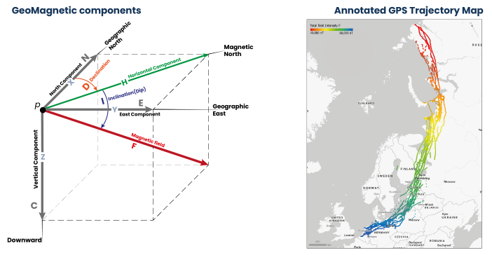

What’s MagGeo

MagGeo is a tool that helps ecologists or animal movement researchers to link earth’s magnetic field data from satellite source to GPS trajectories. Inspired by the Environmental Data Automated Track Annotation System (Env-DATA) Service a tool from Movebank and help researcher to get a better understanding about the geomagnetic variations across the GPS trajectories.
MagGeo is entirely built-in python and using a set of Jupyter Notebooks that offer several ways to link GPS tracks with the geomagnetic components using the data from one of the up-to-date satellite sources - Swarm Constellation. MagGeo will create an enriched GPS track with the following components:
- Latitude from the GPS Track.
- Longitude from the GPS Track.
- Timestamp from the GPS Track.
- Magnetic Field Intensity mapped as Fgps in nanoTeslas (nT).
- N (Northwards) component mapped as N in nanoTeslas (nT).
- E (Eastwards) component mapped as E. in nanoteslas (nT).
- C (Downwards or Center) component mapped as C in nanoTeslas (nT).
- Horizontal component mapped as H in nanoTeslas (nT).
- Magnetic Declination or dip angle mapped as D in degrees
- Magnetic Inclination mapped as I in degrees
- Kp Index mapped as kp
- Total Points as the amount of Swarm measures included in the ST-IDW process from the trajectories requested in the three satellites.
- Minimum Distance mapped as MinDist, representing the minimum distance amount the set of identified point inside the Space Time cylinder and each GPS point location.
- Average Distance mapped as AvDist, representing the average distance amount the set of distances between the identified Swarm Point in the Space Time cylinder and the GPS Points location.
Researchers, particularly ecologists now can study the annotated table to analyze the geomagnetic Spatio-temporal variation across any GPS trajectory.
Problems? Suggestions? - Contact us
MagGeo is work in progress and we are constantly making improvements that you can follow up with the commits made in the pubic GitHub repo. For general enquiries, scientific concepts, suggestions please email: fbenitez@turing.ac.uk, ud2@st-andrews.ac.uk, jed.long@uwo.ca
For errors, or improvements please submit an issue in this repo, describing the problem you have.